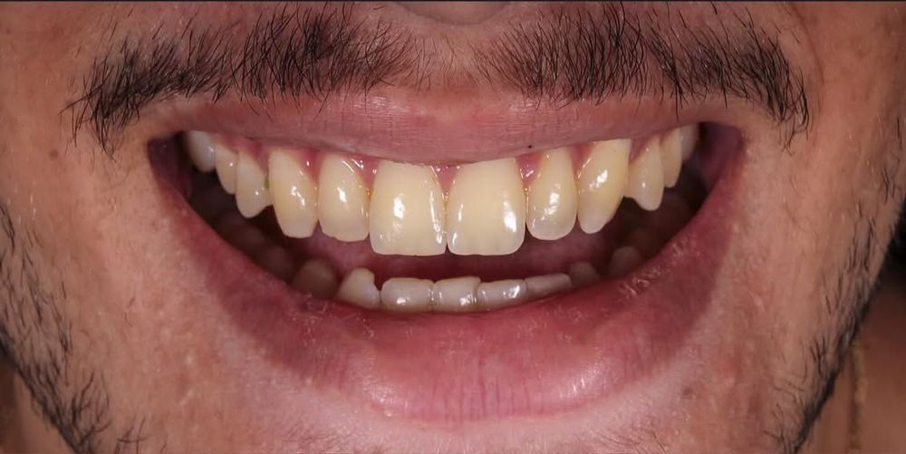
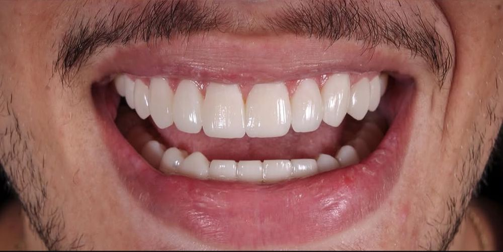
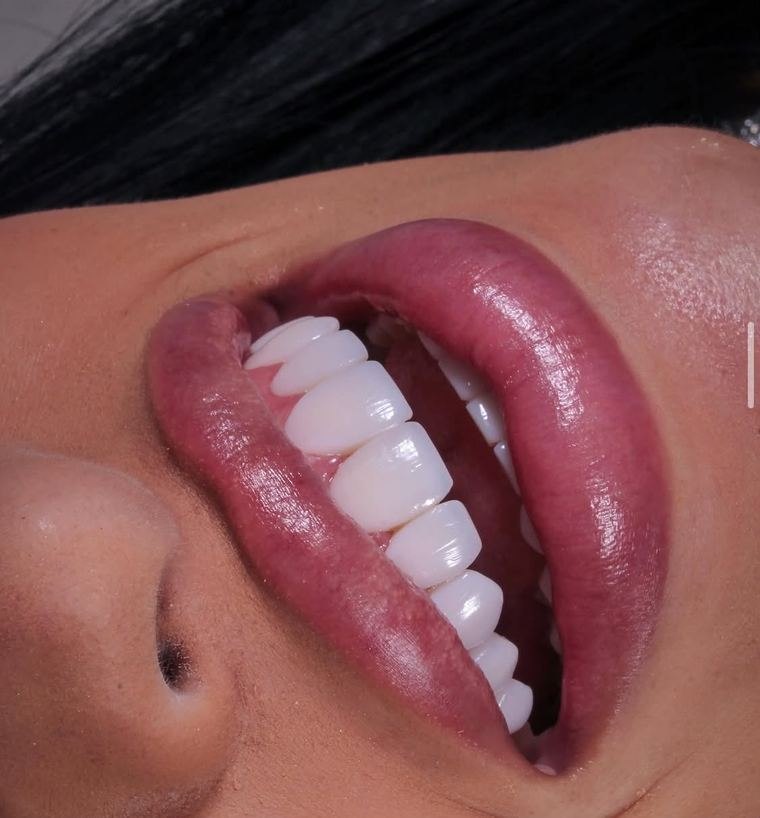

Sorrisos perfeitos começam aqui.
Lentes em resina estratificadas, feitas à mão livre em sessão única. Sem dor e sem desgaste dos seus dentes.


AntesDepoisArraste para comparar o antes e o depois de um paciente da clínica.
Resultados reais da clínica
Cada lente é esculpida em resina, camada por camada, para ficar natural no rosto de quem sorri. Veja alguns dos sorrisos que fizemos.


Fotos de pacientes da Clínica Tajy, publicadas com autorização. Os resultados variam de pessoa para pessoa e dependem da avaliação clínica.
Por que lentes em resina
Sem dor
O procedimento é feito com conforto, sem a necessidade de intervenções agressivas.
Sem desgaste
A resina é aplicada sobre o dente, preservando a sua estrutura natural.
Sessão única
Você entra com o sorriso de antes e sai com o sorriso novo no mesmo dia.
Como funciona
Fale com a gente
Chame no WhatsApp e escolha o melhor horário para a sua avaliação.
Avaliação
Analisamos o seu sorriso e planejamos o formato e a cor das lentes com você.
Sorriso novo
As lentes são feitas à mão livre, em sessão única, direto nos seus dentes.
Agende sua avaliação
Tire suas dúvidas e marque um horário. O atendimento é pelo WhatsApp.
Onde estamos
Estamos em Santana, na Zona Norte de São Paulo.
- Endereço
- Rua Voluntário da Pátria, 1284
Santana, São Paulo, SP · CEP 02010-200 - Agendamentos
- Somente pelo WhatsApp